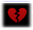

Creating an MA session, or inviting session members is an exclusive grandMA2 console or onPC feature. If the grandMA2 console is connected and a session is started within the console, the show file will be transferred to the 3D. So the synchronization of the grandMA2 console and the MA 3D data is guaranteed. The 2 possible states of the connection are indicated by the heart in the status bar. The blinking of the heart indicates the communication between the grandMA2 console and the MA 3D.

Heart is broken and red: MA 3D has not joined a session. The connection state is 'Standalone'.
Heart is blinking green: MA 3D has joined a session. The connection state is 'Slave'.